source("../dsan-globals/_globals.r")Week 1: Introduction to GIS
PPOL 6805 / DSAN 6750: GIS for Spatial Data Science
Fall 2025
Class Sessions
Welcome to The Wonderful World of GIS!
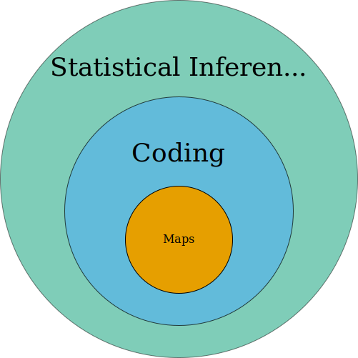
Your Final Project
Unit 1: Maps
- Your least favorite part of the course (per survey 😜)
- My favorite part of the course (because I love overthinking things)
- My goal given survey results: Let’s think of this unit like learning languages for expressing spatial information:
library(sf)
library(svglite)
svglite("images/st_polygon.svg", width = 6, height = 4.5)
poly_blob <- st_polygon(
list(
rbind(c(2,1), c(3,1), c(5,2), c(6,3), c(5,3), c(4,4), c(3,4), c(1,3), c(2,1)),
rbind(c(2,2), c(3,3), c(4,3), c(4,2), c(2,2))
)
)
plot(poly_blob,
border = 'black', col = '#ff8888', lwd = 4
)
dev.off()| Temporal Information | Spatial Information |
|---|---|
| 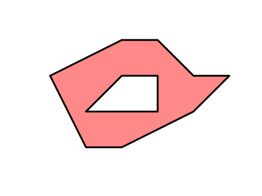 | |
\(\Rightarrow\) 22.5 seconds |
\(\Rightarrow\) POLYGON ((2 1, 3 1, 5 2, 6 3, 5 3, 4 4, 3 4, 1 3, 2 1),(2 2, 3 3, 4 3, 4 2, 2 2)) |
- I think you’ll be surprised at how, complexity of geospatial/spatio-temporal data \(\implies\) need for programming-language-independent representations
Unit 2: Using Code to Make Maps
- (More on this in Prereqs section below!)
- Given representations from Part 1, the task of coding becomes task of finding “best” library for loading/manipulating/plotting them
- Where “best” = best for you!
- In R:
sfand friends (tidyverse) - In Python:
geopandas
Unit 3: Spatial Data Science
- Drawing inferences about spatial phenomena
- The meat of the course
- How can we write code (Unit 2) to analyze a map (Unit 1) so as to…
- Discover patterns (EDA: Exploratory Data Analysis) or
- Test hypotheses (CDA: Confirmatory Data Analysis)
Unit 4: Applications / Final Project
- Take everything you’ve learned in Units 1-3 and Kamehameha them onto something you care about in the world!
- Public Policy: Which counties are most in need of more transportation infrastructure?
- Urban Planning: Which neighborhoods are most in need of a new bus stop?
- Epidemiology: What properties of a region make it more/less susceptible to infectious diseases? Where should we intervene to “cut the chain” of a disease vector?
Who Am I? Why Am I Teaching You?
- Started out as PhD student in Computer Science
- UCLA: Algorithmic Game Theory
- Stanford (MS): Economic Network Analysis
- Ended up with PhD in Political Economy
- Columbia: “Computational Political Theory”
My GIS Adventures
- High school project: mine defusal in Indochina
- As a Telecommunications Engineer for Huawei (HKUST)
- As an Urban Economist at UC Berkeley
- Used, e.g., Google Maps API to evaluate effects of Suburbanization of Poverty
My GIS 🤯 Moment
- Horrors of “Vietnam War” did not end in 1975…
- Casualties from unexploded ordnance (cluster bombs) continue to devastate the region, over 220,000 victims:
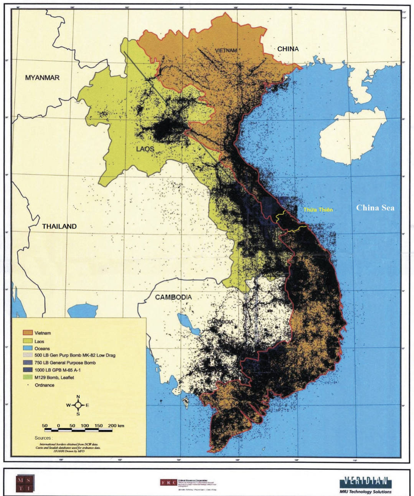
Huawei: Optimizing Cell Tower Placement
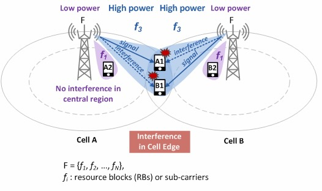
The Suburbanization of Poverty
- Since 2008, a person living in poverty in the US is more likely to be in a suburb than an “inner city”
- What does this mean for…
- Access to Food / Public Services?
- Finding a job \(\leadsto\) Commuting?
- My job: computing “suburban accessibility indices”
- Does commuting = straight line distance?
“Distance” vs. Distance!
You’ve just been hired as a fine art curator at The Whitney… Congratulations!
| Commuting 1 mile to the Whitney | 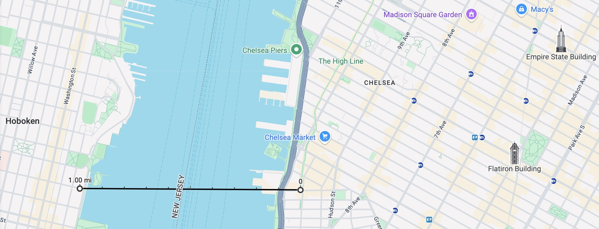 |
| Also commuting 1 mile to the Whitney | 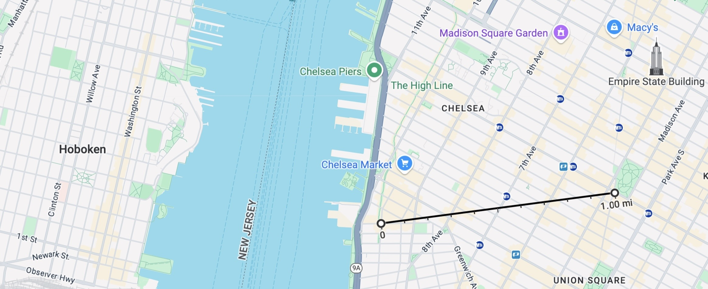 |
Why Should You Care About GIS?
- As a Human
- As a Data Scientist
- As a Public Policy Expert
As Humans
- To understand the world around you!

- \(\implies\) Crucial landmark in the genesis of social science
As Data Scientists
- All data scientists are expected to know how to analyze “standard” types of data: tabular, numeric data (think spreadsheets)
- However, you can differentiate yourself in the scary scary job market by developing a particular focus on some “non-standard” type:
Hello Mrs. Google Meta OpenAI, yes, indeed, I have a wealth of experience working with [text data / temporal data / signal processing / geospatial data]. This job will be no problem for me.
As Public Policy Experts
- Oftentimes, all it takes is one map to see why a policy has failed 😱
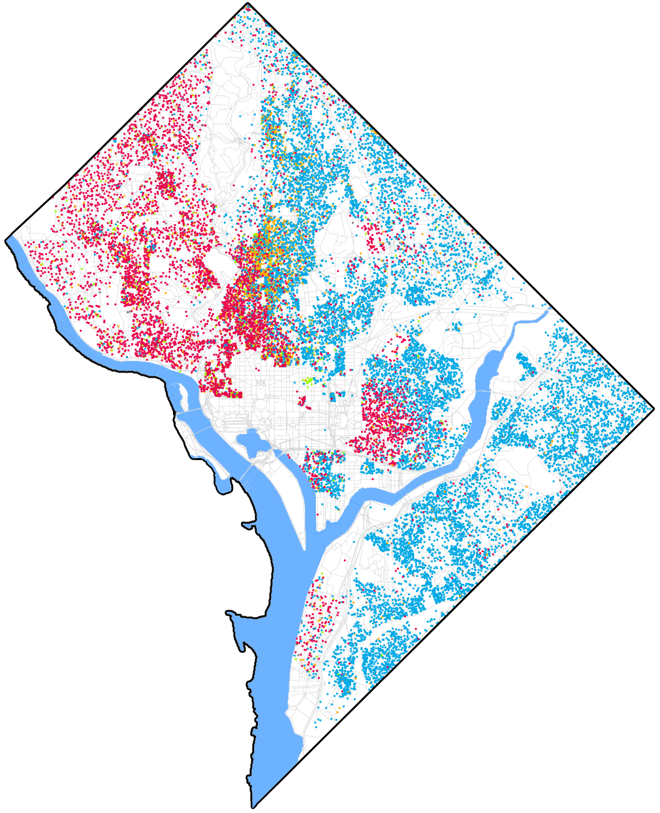
http://www.radicalcartography.net/index.html?chicagodots, then adapted to DC: “[Eric Fisher] was astounded by Bill Rankin’s map of Chicago’s racial and ethnic divides and wanted to see what other cities looked like mapped the same way. To match his map, Red is White, Blue is Black, Green is Asian, Orange is Hispanic, Gray is Other, and each dot is 25 people. Data from Census 2000. Base map © OpenStreetMap, CC-BY-SA” https://commons.wikimedia.org/wiki/File:Race_and_ethnicity_map_of_Washington,_D.C..png
GIS as an “Umbrella Term”
- Libraries and tools we’ll use: specific systems/methods for geospatial analysis
- GIS is an “umbrella term”, which just vaguely refers to this entire universe of libraries/tools/techniques/approaches
| Umbrella Term | Concepts | Specific Skills |
|---|---|---|
| Coding |
|
|
| GIS |
|
|
ArcGIS…
- For info on Georgetown’s provision of ArcGIS (Online, Pro, and Desktop), see the Library Guide

Then… Why Can’t We Just Use ArcGIS?
Analogy from non-geospatial data science:
| Text Drawn Map |
→ | Speadsheet Digital Map |
→ | Equations Maps w/ArcGIS |
→ | Code This Class |
||||||||||||||||||||||||
|---|---|---|---|---|---|---|---|---|---|---|---|---|---|---|---|---|---|---|---|---|---|---|---|---|---|---|---|---|---|---|
Start writing
info.txt |
Start entering info in rows
|
Start using equations
|
Write code plot_balance.py 
Profit 💲💰🤑💰💲 |
|||||||||||||||||||||||||||
The Spatial Data Science Universe

Course Policy Things
- How To Not Be Scared of Prerequisites
- ChatGPT
- Learning How To Learn
Pedagogical Principles
- There’s literally no such thing as “intelligence”
- Anyone is capable of learning anything (neural plasticity)
- Growth mindset: “I can’t do this” \(\leadsto\) “I can’t do this yet!”
- The point of a class is learning: understanding something about the world, either (a) For its own sake (end in itself) or (b) Because it’s relevant to something you care about (means to an end)
Our teaching should be governed, not by a desire to make students learn things, but by the endeavor to keep burning within them that light which is called curiosity. (Montessori 1916)
ChatGPT and Whatnot
- If you feel like ChatGPT will help you learn something in the course, then use it!
- If you feel like you’re using it as a “crutch”, try to hold yourself accountable for not using it!
| Take the time/energy you're using to worry about... | Use it instead to worry about... |
|---|---|
|
Learning GIS |
On Not Worrying About Prereqs
- I genuinely believe that I can make the course accessible to you, meeting you wherever you’re at, no matter what!
- Everyone learns at their own pace (who says 14 weeks is “correct” amount of time to learn GIS?), and I structure my courses as best as I possibly can to adapt to your pace
- \(\Rightarrow\) Assessments (HW, Midterm) valuable in two ways:
- [Valuable for you] As an accountability mechanism to make sure you’re learn the material (how do we know when we’ve learned something? When we can answer questions about it / use it to accomplish things!)
- [Valuable for me] For assessing and updating pace
R and/or Python and/or JS
- My Geometry vs. Algebra Rant… Euclid’s Elements, Book VI, Proposition 28.
- The problem: Divide a given straight line so that the rectangle contained by its segments may be equal to a given area, not exceeding the square of half the line.
Geometers solved w/geometry (300 BC)…

…Algebraists solved w/algebra (2000 BC)…
\[ \begin{align*} &ax^2 + bx + c = 0 \\ \Rightarrow \; & x_+ = \frac{-b + \sqrt{b^2 - 4ac}}{2a} \end{align*} \]
…From 1637 onwards, whichever is easier! 🤯🤯🤯 (Isomorphism)


Learning How To Learn
He’s Literally Extremely Correct!

Let’s Make Some Dang Maps!
Our First Map: Polygons!
(Quick demo adapted from Sherry Xie’s R Consortium Workshop: Analyzing Geospatial Data in R, using DC rather than Philadelphia open data.)
Code
library(sf)
# Load DC tracts data
dc_sf_fpath <- "data/DC_Census_2020/Census_Tracts_in_2020.shp"
dc_sf <- st_read(dc_sf_fpath);Reading layer `Census_Tracts_in_2020' from data source
`/Users/jpj/gtown-local/ppol6805/w01/data/DC_Census_2020/Census_Tracts_in_2020.shp'
using driver `ESRI Shapefile'
Simple feature collection with 206 features and 315 fields
Geometry type: POLYGON
Dimension: XY
Bounding box: xmin: -8584933 ymin: 4691871 xmax: -8561515 ymax: 4721078
Projected CRS: WGS 84 / Pseudo-MercatorCode
cols_to_keep <- c("OBJECTID", "TRACT", "GEOID", "ALAND", "AWATER", "STUSAB", "SUMLEV", "GEOCODE", "STATE", "NAME", "POP100", "HU100", "geometry")
dc_sf <- dc_sf |> select(cols_to_keep)Warning: Using an external vector in selections was deprecated in tidyselect 1.1.0.
ℹ Please use `all_of()` or `any_of()` instead.
# Was:
data %>% select(cols_to_keep)
# Now:
data %>% select(all_of(cols_to_keep))
See <https://tidyselect.r-lib.org/reference/faq-external-vector.html>.sf Objects
dc_sf is an object of type sf (short for “simple feature”), which extends data.frame, and contains features which have type POLYGON
class(dc_sf)[1] "sf" "data.frame"head(dc_sf)| OBJECTID | TRACT | GEOID | ALAND | AWATER | STUSAB | SUMLEV | GEOCODE | STATE | NAME | POP100 | HU100 | geometry |
|---|---|---|---|---|---|---|---|---|---|---|---|---|
| 1 | 002002 | 11001002002 | 849376 | 0 | DC | 140 | 11001002002 | 11 | Census Tract 20.02 | 4072 | 1532 | POLYGON ((-8575655 4714476,… |
| 2 | 002101 | 11001002101 | 600992 | 0 | DC | 140 | 11001002101 | 11 | Census Tract 21.01 | 5687 | 2335 | POLYGON ((-8574745 4715676,… |
| 3 | 002102 | 11001002102 | 725975 | 0 | DC | 140 | 11001002102 | 11 | Census Tract 21.02 | 5099 | 2221 | POLYGON ((-8573824 4715684,… |
| 4 | 002201 | 11001002201 | 415173 | 0 | DC | 140 | 11001002201 | 11 | Census Tract 22.01 | 3485 | 1229 | POLYGON ((-8574654 4714781,… |
| 5 | 002202 | 11001002202 | 698895 | 566 | DC | 140 | 11001002202 | 11 | Census Tract 22.02 | 3339 | 1454 | POLYGON ((-8573792 4714811,… |
| 6 | 000101 | 11001000101 | 199776 | 5261 | DC | 140 | 11001000101 | 11 | Census Tract 1.01 | 1406 | 999 | POLYGON ((-8577962 4708867,… |
Working With sf Objects
With some rare but important exceptions (which we’ll learn!), can be used just like a data.frame / tibble:
Code
str(dc_sf) # view structureClasses 'sf' and 'data.frame': 206 obs. of 13 variables:
$ OBJECTID: int 1 2 3 4 5 6 7 8 9 10 ...
$ TRACT : chr "002002" "002101" "002102" "002201" ...
$ GEOID : chr "11001002002" "11001002101" "11001002102" "11001002201" ...
$ ALAND : int 849376 600992 725975 415173 698895 199776 1706484 505004 776435 1042157 ...
$ AWATER : int 0 0 0 0 566 5261 516665 0 439661 2305 ...
$ STUSAB : chr "DC" "DC" "DC" "DC" ...
$ SUMLEV : int 140 140 140 140 140 140 140 140 140 140 ...
$ GEOCODE : chr "11001002002" "11001002101" "11001002102" "11001002201" ...
$ STATE : int 11 11 11 11 11 11 11 11 11 11 ...
$ NAME : chr "Census Tract 20.02" "Census Tract 21.01" "Census Tract 21.02" "Census Tract 22.01" ...
$ POP100 : int 4072 5687 5099 3485 3339 1406 3417 4108 4672 6161 ...
$ HU100 : int 1532 2335 2221 1229 1454 999 2053 11 2169 2845 ...
$ geometry:sfc_POLYGON of length 206; first list element: List of 1
..$ : num [1:155, 1:2] -8575655 -8575655 -8575655 -8575655 -8575655 ...
..- attr(*, "class")= chr [1:3] "XY" "POLYGON" "sfg"
- attr(*, "sf_column")= chr "geometry"
- attr(*, "agr")= Factor w/ 3 levels "constant","aggregate",..: NA NA NA NA NA NA NA NA NA NA ...
..- attr(*, "names")= chr [1:12] "OBJECTID" "TRACT" "GEOID" "ALAND" ...Working With sf Objects
Code
head(dc_sf) # view first several rows| OBJECTID | TRACT | GEOID | ALAND | AWATER | STUSAB | SUMLEV | GEOCODE | STATE | NAME | POP100 | HU100 | geometry |
|---|---|---|---|---|---|---|---|---|---|---|---|---|
| 1 | 002002 | 11001002002 | 849376 | 0 | DC | 140 | 11001002002 | 11 | Census Tract 20.02 | 4072 | 1532 | POLYGON ((-8575655 4714476,… |
| 2 | 002101 | 11001002101 | 600992 | 0 | DC | 140 | 11001002101 | 11 | Census Tract 21.01 | 5687 | 2335 | POLYGON ((-8574745 4715676,… |
| 3 | 002102 | 11001002102 | 725975 | 0 | DC | 140 | 11001002102 | 11 | Census Tract 21.02 | 5099 | 2221 | POLYGON ((-8573824 4715684,… |
| 4 | 002201 | 11001002201 | 415173 | 0 | DC | 140 | 11001002201 | 11 | Census Tract 22.01 | 3485 | 1229 | POLYGON ((-8574654 4714781,… |
| 5 | 002202 | 11001002202 | 698895 | 566 | DC | 140 | 11001002202 | 11 | Census Tract 22.02 | 3339 | 1454 | POLYGON ((-8573792 4714811,… |
| 6 | 000101 | 11001000101 | 199776 | 5261 | DC | 140 | 11001000101 | 11 | Census Tract 1.01 | 1406 | 999 | POLYGON ((-8577962 4708867,… |
Working With sf Objects
Code
dim(dc_sf) # view dimensions[1] 206 13Code
dc_sf[1,] # select first row| OBJECTID | TRACT | GEOID | ALAND | AWATER | STUSAB | SUMLEV | GEOCODE | STATE | NAME | POP100 | HU100 | geometry |
|---|---|---|---|---|---|---|---|---|---|---|---|---|
| 1 | 002002 | 11001002002 | 849376 | 0 | DC | 140 | 11001002002 | 11 | Census Tract 20.02 | 4072 | 1532 | POLYGON ((-8575655 4714476,… |
Working With sf Objects
Code
head(dc_sf$NAME) # select column by name [1] "Census Tract 20.02" "Census Tract 21.01" "Census Tract 21.02"
[4] "Census Tract 22.01" "Census Tract 22.02" "Census Tract 1.01" Code
head(dc_sf[,4]) # select column by number| ALAND | geometry |
|---|---|
| 849376 | POLYGON ((-8575655 4714476,… |
| 600992 | POLYGON ((-8574745 4715676,… |
| 725975 | POLYGON ((-8573824 4715684,… |
| 415173 | POLYGON ((-8574654 4714781,… |
| 698895 | POLYGON ((-8573792 4714811,… |
| 199776 | POLYGON ((-8577962 4708867,… |
And… Actually Displaying the Map!
Code
# We can extract the geometry with the st_geometry function
dc_geo <- st_geometry(dc_sf)
#pt_geo
# Plot the geometry with base R's plot() function
plot(dc_geo)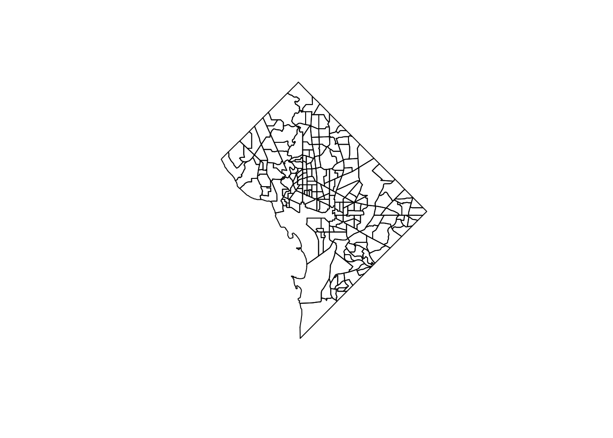
Looking Ahead: Types of Geospatial Data
Key Notation / Definition
- \(d\)-Dimensional “Spatial Process” (Schabenberger and Gotway 2004, 6)
\[ \text{Data} = \left\{Z(\mathbf{s}) \mid \mathbf{s} \in D \subset \mathbb{R}^d\right\} \]
- \(d > 1\): Data forms a Random Field (this class: \(d = 2\)!)
| Geostatistical Data | Lattice/Region Data | Point Pattern | |
|---|---|---|---|
| Criteria | Fixed \(D\), Continuous | Fixed \(D\), Discrete | Random subset \(D^* \subseteq D\) |
| Interest | Infer non-observed parts of \(D\) | Autocorrelation, clustering | Point-generating process |
| Example |
|
|
|
Spatial Randomness
Code
library(tidyverse)
library(spatstat)
set.seed(6805)
N <- 60
r_core <- 0.05
obs_window <- square(1)
# Regularity via Inhibition
#reg_sims <- rMaternI(N, r=r_core, win=obs_window)
cond_reg_sims <- rSSI(r=r_core, N)
# CSR data
#csr_sims <- rpoispp(N, win=obs_window)
cond_sr_sims <- rpoint(N, win=obs_window)
### Clustered data
#clust_sims <- rMatClust(kappa=6, r=2.5*r_core, mu=10, win=obs_window)
#clust_sims <- rMatClust(mu=5, kappa=1, scale=0.1, win=obs_window, n.cond=N, w.cond=obs_window)
#clust_sims <- rclusterBKBC(clusters="MatClust", kappa=10, mu=10, scale=0.05, verbose=FALSE)
# Each cluster consist of 10 points in a disc of radius 0.2
nclust <- function(x0, y0, radius, n) {
#print(n)
return(runifdisc(10, radius, centre=c(x0, y0)))
}
cond_clust_sims <- rNeymanScott(kappa=5, expand=0.0, rclust=nclust, radius=2*r_core, n=10)
# And PLOT
plot_w <- 400
plot_h <- 400
plot_scale <- 2.25
cond_reg_plot <- cond_reg_sims |> sf::st_as_sf() |>
ggplot() +
geom_sf() +
dsan_theme()
ggsave("images/cond_reg.png", cond_reg_plot, width=plot_w, height=plot_h, units="px", scale=plot_scale)
cond_sr_plot <- cond_sr_sims |> sf::st_as_sf() |>
ggplot() +
geom_sf() +
dsan_theme()
ggsave("images/cond_sr.png", cond_sr_plot, width=plot_w, height=plot_h, units="px", scale=plot_scale)
cond_clust_plot <- cond_clust_sims |> sf::st_as_sf() |>
ggplot() +
geom_sf() +
dsan_theme()
ggsave("images/cond_clust.png", cond_clust_plot, width=plot_w, height=plot_h, units="px", scale=plot_scale)| Autocorrelation | \(I = -1\) | ← | \(I = 0\) | → | \(I = 1\) |
|---|---|---|---|---|---|
| Description | Negative Autocorr | No Autocorr | Positive Autocorr | ||
| Event at \(\mathbf{s} = (x,y)\) Implies | Less likely to find another point nearby | No information about nearby points | More likely to find another point nearby | ||
| Resulting Pattern | Regularity | Reg/Clustered Mix | Clustering | ||
| Process(es) Which Could Produce Pattern | 1st Order: Random within even-spaced grid 2nd Order: Competition |
1st Order: i.i.d. points 2nd Order: i.i.d. distances |
1st Order: Tasty food at clust centers 2nd Order: Cooperation |
||
| Fixed \(N\) | 60 | 60 | 60 | ||
 |
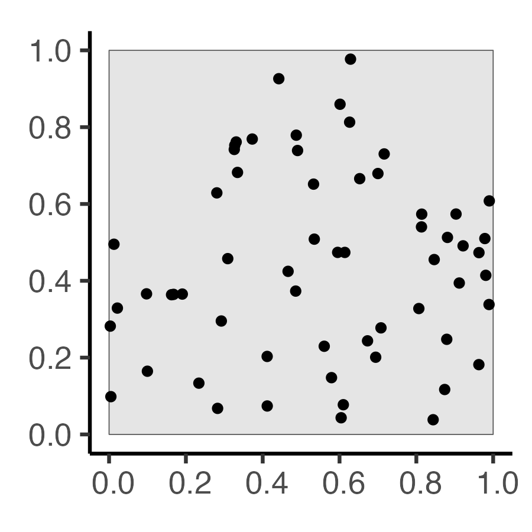 | 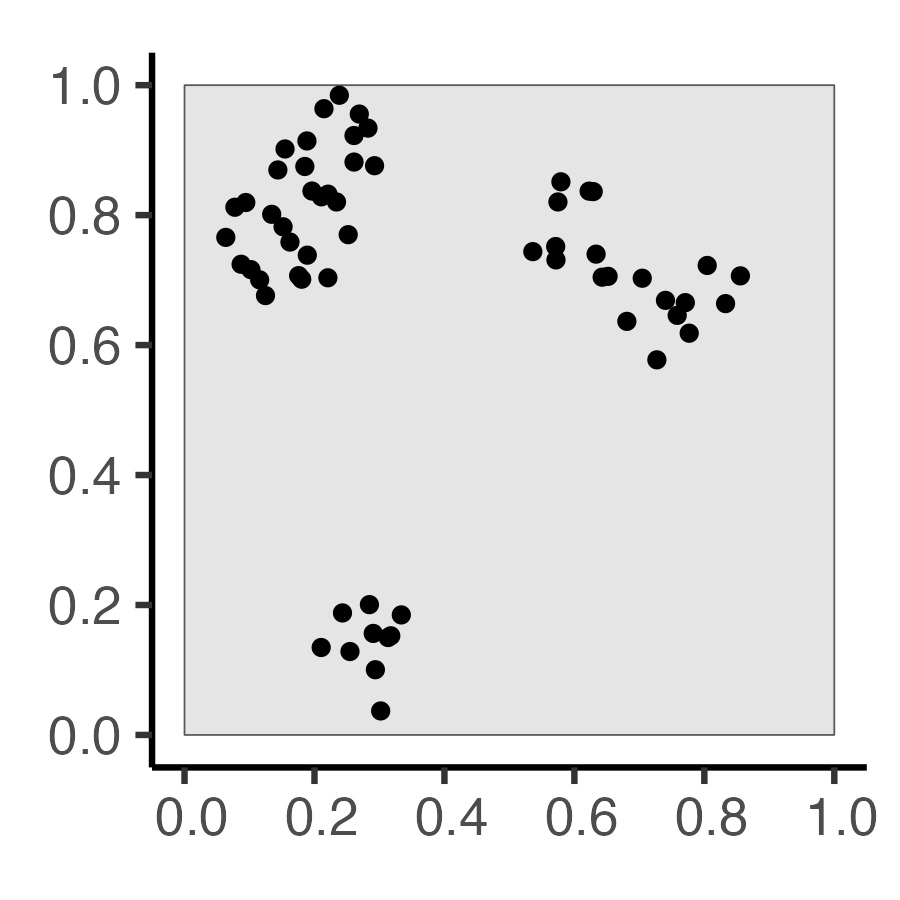 |
Complete Spatial Randomness (CSR)
Code
library(tidyverse)
library(spatstat)
set.seed(6807)
lambda <- 60
r_core <- 0.05
obs_window <- square(1)
# Regularity via Inhibition
# Regularity via Inhibition
reg_sims <- rMaternI(lambda, r=r_core, win=obs_window)
# CSR data
csr_sims <- rpoispp(N, win=obs_window)
### Clustered data
clust_mu <- 10
clust_sims <- rMatClust(kappa=lambda / clust_mu, scale=2*r_core, mu=10, win=obs_window)
# And PLOT
plot_w <- 400
plot_h <- 400
plot_scale <- 2.25
reg_plot <- reg_sims |> sf::st_as_sf() |>
ggplot() +
geom_sf() +
labs(title=paste0("N = ",reg_sims$n)) +
dsan_theme()
ggsave("images/reg.png", reg_plot, width=plot_w, height=plot_h, units="px", scale=plot_scale)
csr_plot <- csr_sims |> sf::st_as_sf() |>
ggplot() +
geom_sf() +
labs(title=paste0("N = ",csr_sims$n)) +
dsan_theme()
ggsave("images/csr.png", csr_plot, width=plot_w, height=plot_h, units="px", scale=plot_scale)
clust_plot <- clust_sims |> sf::st_as_sf() |>
ggplot() +
geom_sf() +
labs(title=paste0("N = ",clust_sims$n)) +
dsan_theme()
ggsave("images/clust.png", clust_plot, width=plot_w, height=plot_h, units="px", scale=plot_scale)| Autocorrelation | \(I = -1\) | ← | \(I = 0\) | → | \(I = 1\) |
|---|---|---|---|---|---|
| Description | Negative Autocorr | No Autocorr | Positive Autocorr | ||
| Event at \(\mathbf{s} = (x,y)\) Implies | Less likely to find another point nearby | No information about nearby points | More likely to find another point nearby | ||
| Resulting Pattern | Regularity | Reg/Clustered Mix | Clustering | ||
| Process(es) Which Could Produce Pattern | 1st Order: Random within even-spaced grid 2nd Order: Competition |
1st Order: i.i.d. points 2nd Order: i.i.d. distances |
1st Order: Tasty food at clust centers 2nd Order: Cooperation |
||
| Fixed Intensity \(\lambda\) | 60 | 60 | 60 | ||
| Random \(N\) | 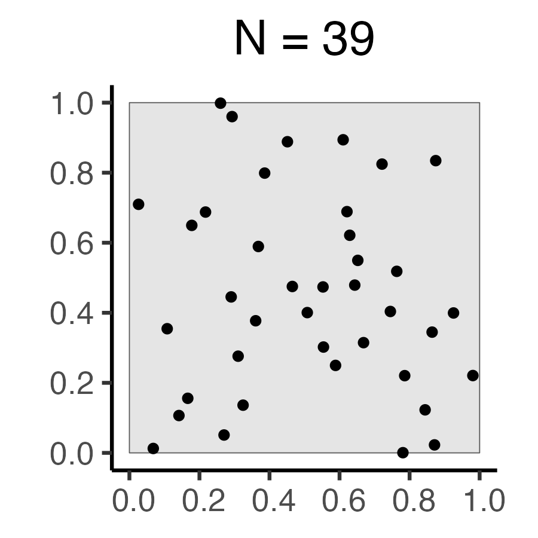 | 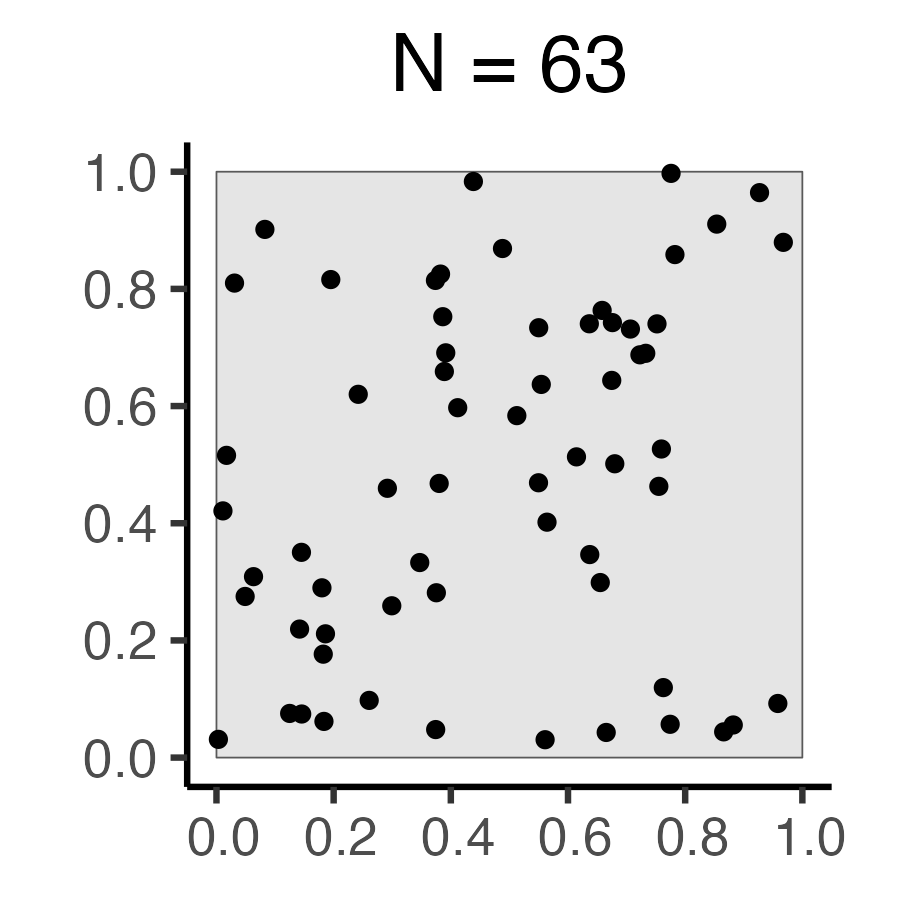 | 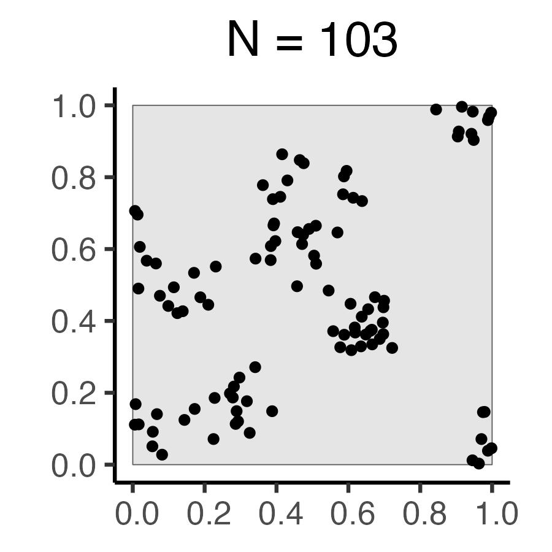 |
References
Montessori, Maria. 1916. Spontaneous Activity in Education: A Basic Guide to the Montessori Methods of Learning in the Classroom. Lulu Press.
Robert, Amélie. 2016. “At the Heart of the Vietnam War: Herbicides, Napalm and Bulldozers Against the A Lưới Mountains.” Journal of Alpine Research Revue de Géographie Alpine, no. 104-1 (April). https://doi.org/10.4000/rga.3266.
Schabenberger, Oliver, and Carol A. Gotway. 2004. Statistical Methods for Spatial Data Analysis. CRC Press. https://www.dropbox.com/scl/fi/25gj53qitsdzw9kvcvfjf/Oliver-Schabenberger-Carol-A.-Gotway-Statistical-methods-for-spatial-data-analysis.pdf?rlkey=p5ih232gmxzm3zstvszux2big&dl=1.